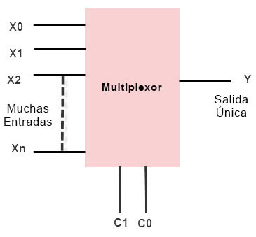
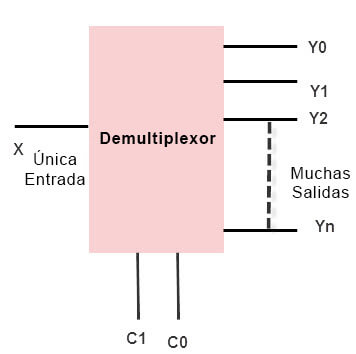
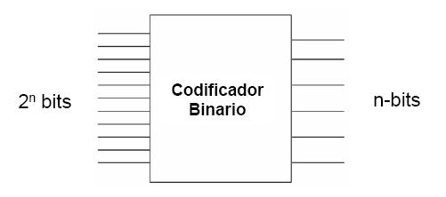
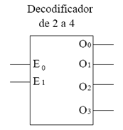

Multiplexor (MUX): es un circuito que tiene múltiples entradas y una única salida. Este dispositivo selecciona una de las entradas para enviarla a la salida en función de un conjunto de entradas de selección. Es decir, actúa como un selector de entrada. El número de entradas de selección determinan cuál de éstas se seleccionará y se enviará a la salida.
Demultiplexor (DEMUX): es un circuito que tiene una sola entrada y múltiples salidas. Este dispositivo selecciona una de las salidas para recibir la entrada en función de un conjunto de entradas de selección. Es decir, actúa como un selector de salida. El número de salidas y las entradas de selección determinan cuál de las salidas recibirá la entrada.
Codificador: es un circuito que tiene múltiples entradas y una sola salida, y codifica las entradas en una forma más compacta. El número de bits de la salida es menor que el número de bits de las entradas. Los codificadores se utilizan en la compresión de datos y en la reducción del tamaño de los datos.
Decodificador: es un circuito que tiene una sola entrada y múltiples salidas, y decodifica la entrada en una forma más extensa. El número de bits de las salidas es mayor que el número de bits de la entrada. Los decodificadores se utilizan en la expansión de datos y en la recuperación de información.
Los multiplexores y demultiplexores permiten seleccionar y direccionar señales de entrada a través de una única línea de salida o entrada, respectivamente. Por otro lado, los codificadores y decodificadores se utilizan para comprimir y descomprimir la información. El uso de estos componentes en la electrónica y la informática es crucial para diseñar sistemas eficientes y escalables. Por lo tanto, resulta muy importante entender los conceptos fundamentales detrás de los multiplexores, demultiplexores, codificadores y decodificadores para poder diseñar y construir sistemas digitales más complejos y avanzados.